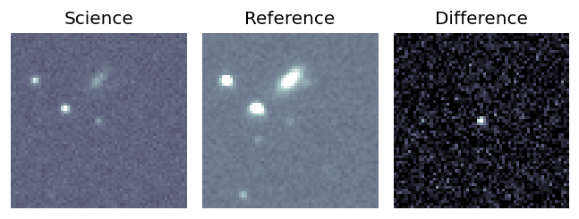
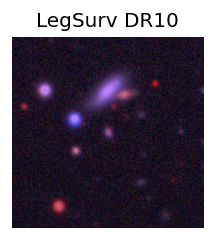
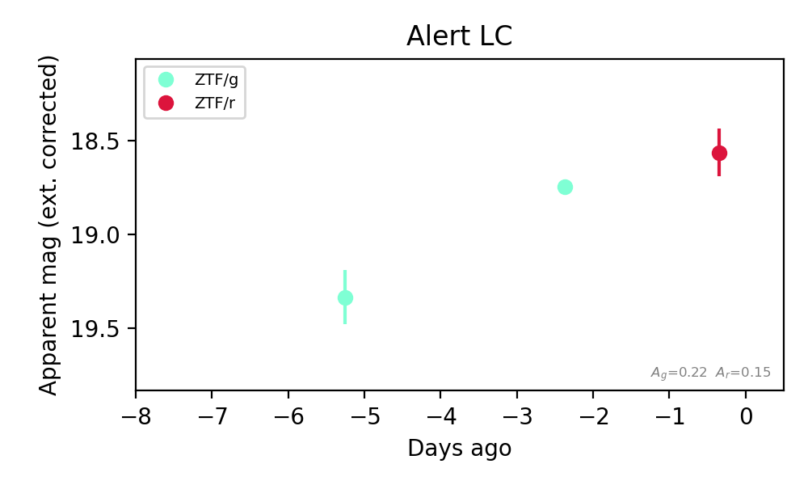
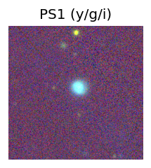
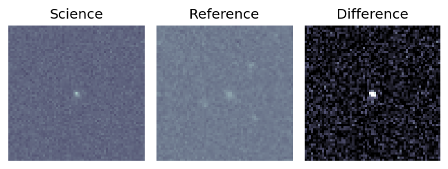
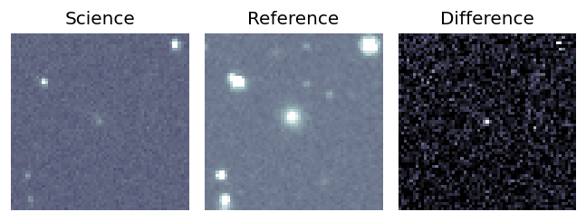
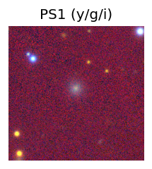
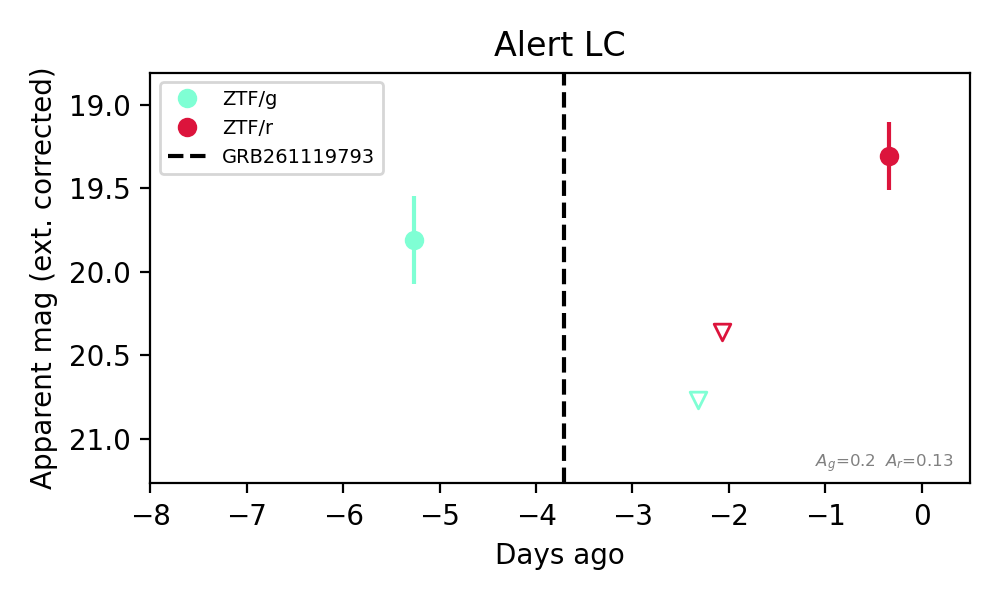
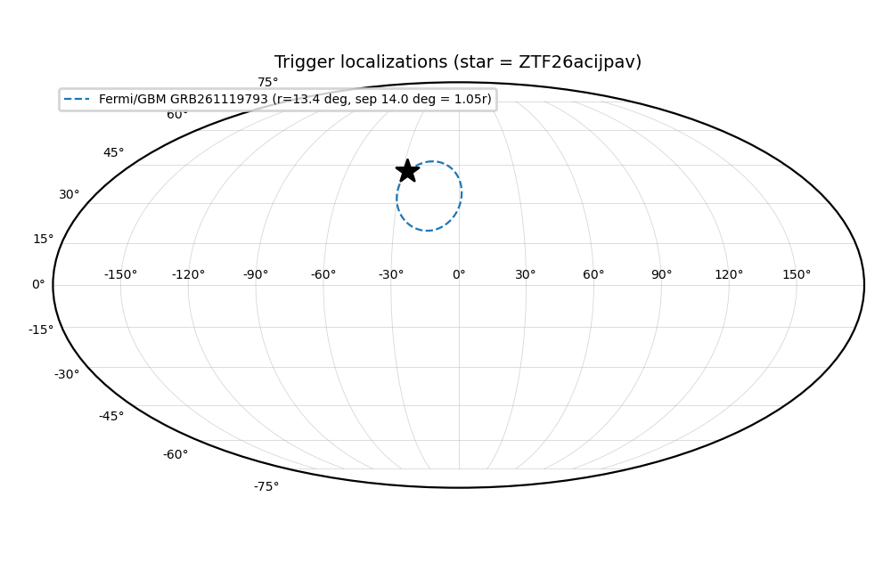

Candidate List 20261123Last night — ZTF: 871 passed basic cuts (27 young) · LSST: 0 passed basic cuts (0 young)Previous Day Next Day
Section 1: New Sources (age<1d) Section 2: Old (1-5d) sources observed last night Section 3: Already classified as a supernova on TNSplaceholder
Section 1: New Afterglow/FBOT Cands Last Night (0)
Section 2: Older Sources Observed Last Night (5)
1. [ZTF] ZTF26achvodo (FBOT?) (TNS: AT 2026akgw) [Back to Top] [Share] [Trigger Swift] [Fritz Alert] [Fritz Source] [Lasair]RA, Dec: 343.54603, 29.58331 22h54m11.05s, 29d34m59.93sGalactic (l, b): 94.46202, -26.7277 ext(g-r) = 0.07


TESS: Sectors [56 83]
SDSS (<15 kpc):Found SDSS phot-z: z=0.22; peak abs mag = -21.71
PS1: 0 sources in 3 arcsec
LegacySurvey: 1 sources in 3 arcsec Closest: d = 0.25 arcsec, 218.5 deg (east of north) photoz=0.56 (68% bounds 0.46, 0.65), type=EXP peak abs mag (ext. corrected) = -24.08 (68% bounds -23.54, -24.45)

Rise Rate:
g: 0.2 mag/day
r: 0.12 mag/day
Fade Rate:
2. [ZTF] ZTF26achvezg (FBOT?) (TNS: AT 2026akfm) [Back to Top] [Share] [Trigger Swift] [Fritz Alert] [Fritz Source] [Lasair]RA, Dec: 17.02342, 13.02123 1h 8m5.62s, 13d 1m16.41sGalactic (l, b): 129.20449, -49.64756 ext(g-r) = 0.021

TESS: Sectors [42 43 70]
SDSS (<15 kpc):Found SDSS phot-z: z=0.09; peak abs mag = -19.78
PS1: 0 sources in 3 arcsec
LegacySurvey: 1 sources in 3 arcsec Closest: d = 0.13 arcsec, 43.9 deg (east of north) photoz=0.07 (68% bounds 0.05, 0.09), type=SER peak abs mag (ext. corrected) = -19.25 (68% bounds -18.49, -19.72)

Rise Rate:
g: 0.22 mag/day
r: 0.2 mag/day
Fade Rate:
3. [ZTF] ZTF26aciblmb (Afterglow?) (TNS: AT 2026akmk) [Back to Top] [Share] [Trigger Swift] [Fritz Alert] [Fritz Source] [Lasair]RA, Dec: 120.17862, 19.62504 8h 0m42.87s, 19d37m30.13sGalactic (l, b): 202.16124, 23.74719 WARNING: -0.9 deg from ecliptic plane ext(g-r) = 0.042


TESS: Sectors [44 45 46 71]
NED host (10 arcsec):Found WISEA J080042.80+193731.9 (G, 2.0″); NED spec-z: z=0.1193 [zflag SLS]; peak abs mag = -19.24
PS1: 0 sources in 3 arcsec
LegacySurvey: 1 sources in 3 arcsec Closest: d = 1.48 arcsec, 263.2 deg (east of north) photoz=0.11 (68% bounds 0.08, 0.21), type=SER peak abs mag (ext. corrected) = -19.05 (68% bounds -18.3, -20.63)

Extinction-corrected gr color:
From alerts: -0.03 +/- 0.19 mag
Extinction-corrected gi color:
From alerts: -0.25 +/- 0.23 mag
Extinction-corrected ri color:
From alerts: -0.22 +/- 0.24 mag
Consistent with synchrotron, g-r>0!
Rise Rate:
g: 0.08 mag/day
r: 0.85 mag/day
i: 0.22 mag/day
Fade Rate:
4. [ZTF] ZTF26acibzya (FBOT?) (TNS: AT 2026akln) [Back to Top] [Share] [Trigger Swift] [Fritz Alert] [Fritz Source] [Lasair]RA, Dec: 356.01581, -6.80351 23h44m3.80s, -6d-48m-12.63sGalactic (l, b): 81.66751, -64.13527 WARNING: -4.66 deg from ecliptic plane ext(g-r) = 0.027

TESS: Sectors [42 70 92]
SDSS (<15 kpc):Found SDSS phot-z: z=0.46; peak abs mag = -23.59
PS1: 0 sources in 3 arcsec
LegacySurvey: 1 sources in 3 arcsec Closest: d = 2.40 arcsec, 260.8 deg (east of north) photoz=0.09 (68% bounds 0.05, 0.11), type=EXP peak abs mag (ext. corrected) = -19.59 (68% bounds -18.45, -20.14)

Extinction-corrected gr color:
From alerts: -0.15 +/- 0.15 mag
Extinction-corrected gi color:
From alerts: -0.49 +/- 0.27 mag
Extinction-corrected ri color:
From alerts: -0.34 +/- 0.27 mag
Rise Rate:
g: 0.29 mag/day
r: 0.11 mag/day
i: 0.04 mag/day
Fade Rate:
5. [ZTF] ZTF26acijpav (Afterglow?) (TNS: AT 2026aker) [Back to Top] [Share] [Trigger Swift] [Fritz Alert] [Fritz Source] [Lasair]RA, Dec: 27.67622, 42.58918 1h50m42.29s, 42d35m21.06sGalactic (l, b): 134.41456, -18.95727 ext(g-r) = 0.063

TESS: Sectors [18 58 85]
PS1: 1 source in 3 arcsec Closest: d = 1.83 arcsec photoz=0.10+/-0.03 peak abs mag = -19.13
LegacySurvey: 0 sources in 3 arcsec


Rise Rate:
g: 0.09 mag/day
r: 0.61 mag/day
Fade Rate:
g: 0.33 mag/day
Section 3: Already classified as a supernova on TNS (0)